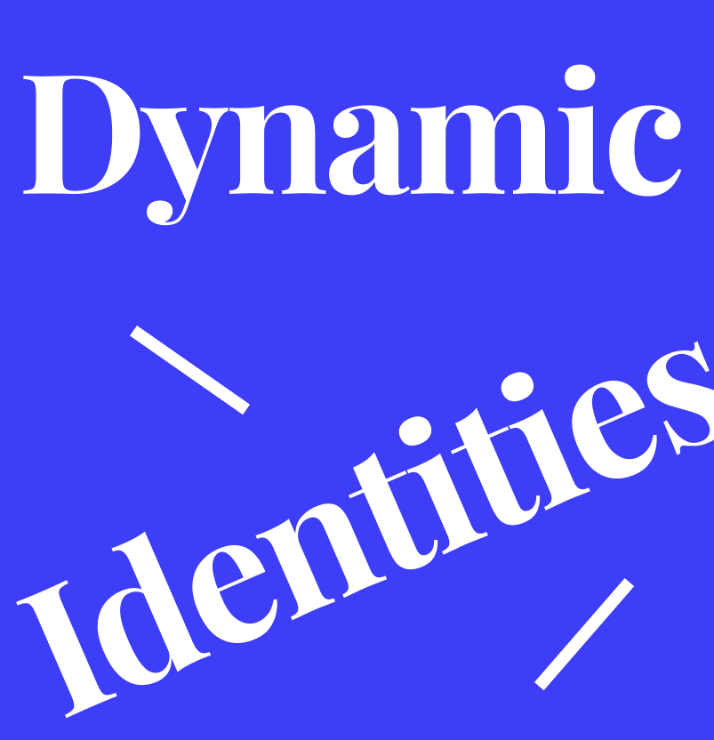
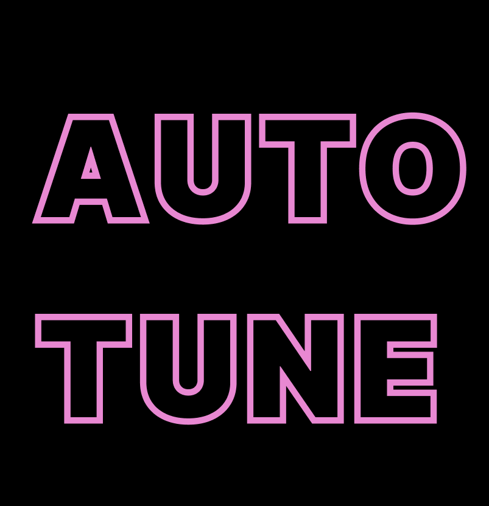
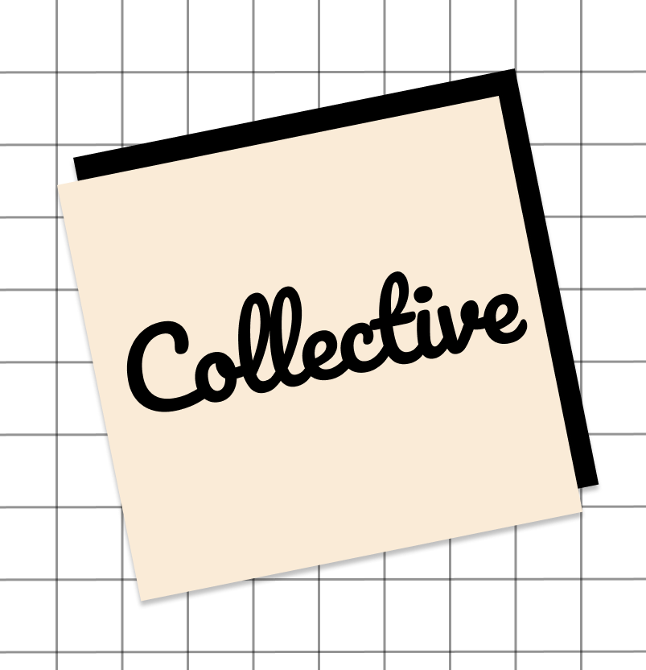
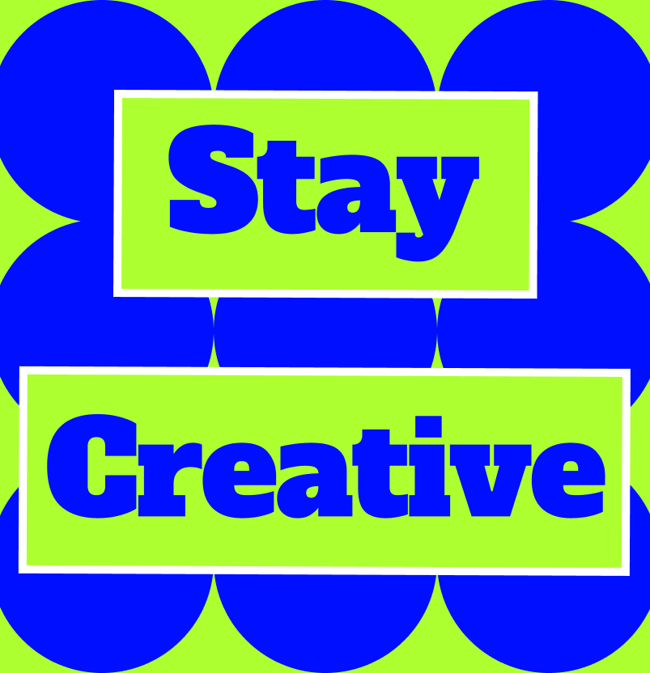
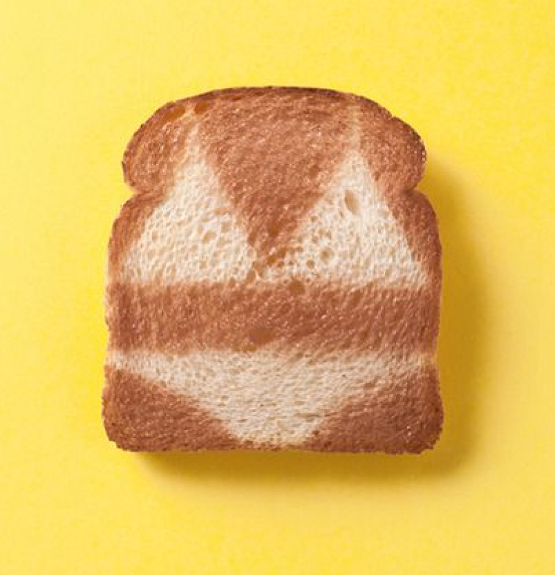

-
01
Manuscript
This project is a redesign inspired by the Dynamic Identities article, exploring flexible logo systems through color and typography -
02
Spread
This project is a response to "Auto-Tune Typography," using layered and rhythmic layouts to break from uniform styles and explore more expressive typographic design. -
03
Binding
This project explores how branding is changing, showing how logos and design systems need to stay flexible and adaptable in today’s fast-changing world. -
04
Links
This project is about staying creative as a designer. It includes tips, inspiring ideas, and resources like websites and books. -
05
Functions
This project is a playful UV tracker that uses toast levels to show how strong the sun is, making tanning awareness easy, fun, and visual.